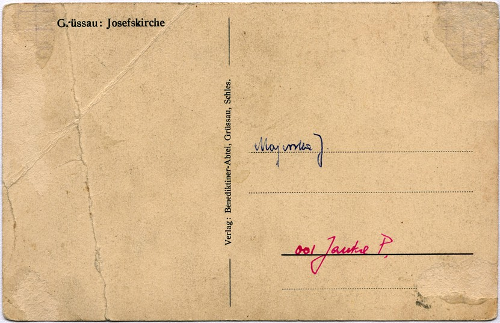

Pocztówka 1
Wymiary kartki to 90 x 140 mm. Z prawej strony czarno-bia³e zdjêcie koœcio³a œwiêtego Józefa o wymiarach 83 x 121 mm otoczone marginesami 3 do 4 mm po po bokach i u góry, na dole 15 mm. Na zdjêciu widoczna jest po³udniowa fasada oraz zachodnia œciana koœcio³a œwiêtego Józefa zbudowanego przez opata Bernarda Rosê w latach 1690-1696. W lewym dolnym rogu zdjêcia, za murem, widaæ niski, nieistniej¹cy dziœ budynek w którym znajdowa³y siê kiedyœ toalety. Sam mur widoczny na zdjêciu równierz dzisiaj nie istnieje - w miejscu zarówno toalet jak i tego fragmentu muru dzisiaj roœnie trawa.
Z lewej strony napisy w jêzyku niemieckim: Grüssau: Josefskirche ( pol. Krzeszów, koœció³ œw. Józefa) a tak¿e oznaczenie wydawcy: Verlag: Benediktiner-Abtei, Grüssau, Schles. (pol. Wydawnictwo: Opactwo Benedyktynów, Krzeszów, Œl¹sk). Na podstawie opisów nie mo¿na ustaliæ dok³adnej daty wydania pocztówki. Skoro jednak wydali j¹ krzeszowscy benedyktyni, to zapewnie mia³o to miejsce miêdzy rokiem 1919 a 1946.
Poni¿ej skany obu stron pocztówki w rozdzielczoœci 150 dpi.